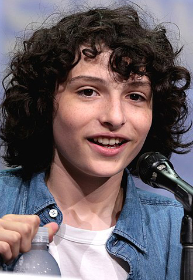
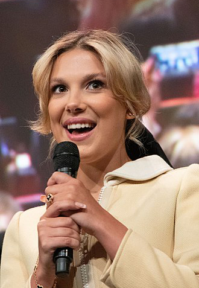
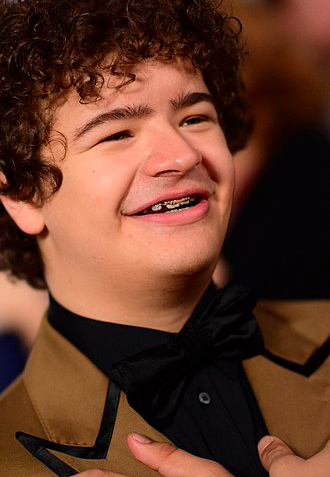
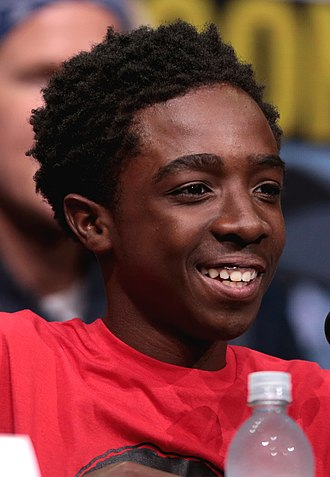
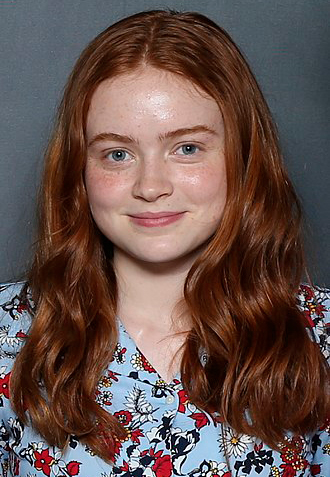
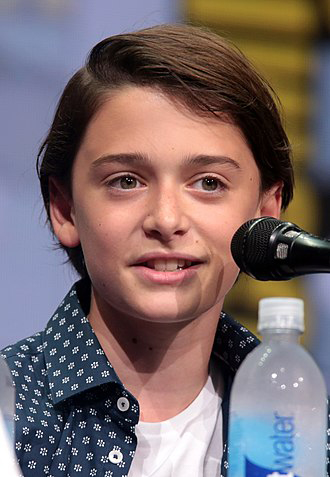

Stranger Things
Stranger Things es una serie de televisión web estadounidense de suspenso y ciencia ficción coproducida y distribuida por Netflix. Escrita y dirigida por los hermanos Matt y Ross Duffer, y producida ejecutivamente por Shawn Levy, se estrenó en la plataforma Netflix el 15 de julio de 2016. La serie recibió críticas positivas por parte de la prensa especializada, que elogió la interpretación, caracterización, ritmo, atmósfera y el claro homenaje al Hollywood de la década de los ochenta, con referencias a películas de Steven Spielberg, Wes Craven, John Carpenter, Stephen King, Rob Reiner y George Lucas, entre otros, incluyendo varias películas, anime y videojuegos. Esta serie está relacionada e inspirada en gran parte en la película de Super 8 del director J.J.Abrams estrenada en 2011.
Actores
-
Finn Wolfhard (Vancouver, Columbia Británica; 23 de diciembre de 2002) es un actor y músico canadiense. Es más conocido por interpretar a Mike Wheeler en la serie original de Netflix Stranger Things y a Richie Tozier en la película de 2017.
-
Millie Bobby Brown (Marbella, Málaga; 19 de febrero de 2004) es una actriz y modelo británica. Inició su carrera en la actuación desde muy pequeña cuando se mudó a Orlando, Florida, en 2011. Saltó a la fama por su interpretación del papel de Once en la serie de Netflix Stranger Things.
-
Gaten John Matarazzo III (Municipio de Little Egg Harbor, Nueva Jersey, 8 de septiembre de 2002) es un actor estadounidense. Inició su carrera como actor en Broadway en 2011 interpretando a Benji en la obra Priscilla, reina del desierto.
-
Caleb Reginald McLaughlin (Carmel, Nueva York; 13 de octubre de 2001) es un actor estadounidense. Empezó su carrera en Broadway realizando el papel de Simba en el musical El Rey León. Desde 2016 hace el papel de Lucas Sinclair en la exitosa serie de Netflix de ciencia ficción Stranger Things.
-
Sadie Elizabeth Sink (Brenham, Texas; 16 de abril de 2002) es una actriz estadounidense. Alcanzó fama internacional por su papel de Max Mayfield en la serie original sobrenatural de Netflix por el que fue nominada junto al resto del elenco de la segunda temporada en 2018.
-
Noah Cameron Schnapp (Nueva York; 3 de octubre de 2004) es un actor estadounidense. Obtuvo reconocimiento por interpretar el papel de Will Byers. En 2015 apareció en la cinta de Steven Spielberg, Bridge of Spies. Regresó para la segunda temporada de Stranger Things, que se estrenó el 27 de octubre de 2017.
Los actores que audicionaron para los papeles de los niños leyeron líneas de Stand by Me. Los hermanos Duffer estimaron que pasaron por alrededor de mil niños actores diferentes para los papeles. Notaron que Wolfhard ya era "un cinéfilo" de las películas de la década de 1980 y fácilmente desempeñó el papel, mientras que encontraron que la audición de Matarazzo era mucho más auténtica que la mayoría de las otras cintas de audición, y lo seleccionaron después de una sola visualización de su cinta de audición. Como el casting se inició inmediatamente después de que Netflix dio luz verde al programa, y antes de que los guiones se completaran por completo, esto permitió que algunas de las tomas de los actores se reflejaran en el guion. El casting de los actores jóvenes para Will y sus amigos se hizo justo después de que se completó el primer guion, y los guiones posteriores incorporaron aspectos de estos actores. Los hermanos dijeron que Modine proporcionó una contribución significativa sobre el personaje del Dr. Brenner, a quien realmente no habían desarrollado antes, ya que lo consideraban el personaje más difícil de escribir dadas sus apariciones limitadas dentro de la narrativa.
Temporadas
Temporada 1
Stranger Things recibió críticas positivas tanto de la prensa especializada como por parte del público. El portal Rotten Tomatoes otorga a la serie una calificación del 95%, basado en 55 reseñas con una puntuación media de 8,5/10. Los comentarios coinciden en que es «excitante, desgarradora y, en ocasiones, terrorífica. Stranger Things es un adictivo homenaje al cine de Spielberg y los clásicos de la televisión de los 80». En Metacritic, la serie tiene una puntuación de 76 sobre 100, basado en 31 reseñas, lo que indica «críticas generalmente favorables».
Temporada 2
En Rotten Tomatoes, la segunda temporada tiene una calificación de aprobación del 94% en base a 126 críticas, y una calificación promedio de 7.79/10. El consenso crítico del sitio afirma que "la segunda temporada de Stranger Things equilibra los momentos de humor y una dulzura nostálgica contra un horror creciente que es aún más eficaz gracias a los personajes llenos de cuerpo y el tono evocador del show".
Temporada 3
En Rotten Tomatoes, la tercera temporada tiene una calificación de aprobación del 89% en base de 136 críticas, y una calificación promedio de 7.86/10. El consenso afirma que "Stranger Things se transforma en un fascinante, aunque familiar, viaje de verano que disfruta de su nostalgia cargada de neón sin perder de vista las ricas relaciones que hacen que la serie sea tan entrañable".
Temporada 4
La cuarta temporada recibió críticas en su mayoría positivas de los críticos, quienes elogiaron la actuación (especialmente Bauer, Brown, Quinn y Sink), el estilo visual, las secuencias de acción y el tono más oscuro y adulto en comparación con temporadas anteriores; Algunos expertos calificaron la temporada de "sobrecargada" debido a la duración más larga del episodio en comparación con temporadas anteriores y encontraron que el final fue decepcionante.
Temporada 5
La quinta y última temporada de la serie dramática estadounidense de ciencia ficción Stranger Things está en desarrollo. Hermanos Duffer anunciaron y escribieron el guión de la última quinta temporada de Stranger Things incluso antes del estreno y rodaje de la cuarta. Posteriormente reelaboraron la historia basándose en los comentarios recibidos tras el lanzamiento de la cuarta temporada, incluso cambiando el final de la serie.